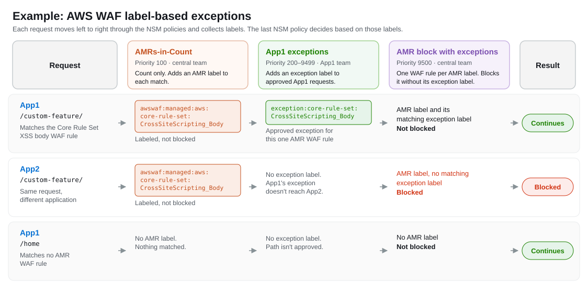

Label-Based Exceptions
Overview
Label-based exceptions let a central team enforce AWS Managed Rules (AMRs) across every application, while each application team gets the exceptions that only its application needs. The central team never changes the AMRs for one application, and an exception for one application never weakens the protections for any other application.
The pattern uses AWS WAF labels. A label is metadata that a WAF rule adds to a request. Later WAF rules in the same web ACL can match on that label. A WAF rule with a Count action adds its labels without ending evaluation, so every later WAF rule still sees the request.
The pattern has three NSM policies, each with its own priority, scope, and owner:
| NSM policy | Priority | Owner | What it does |
|---|---|---|---|
| AMRs-in-Count | 100 | Central team | Runs the AMRs in count mode. Each AMR WAF rule that matches adds its label, but nothing is blocked. |
| Application exceptions | 200–9499 | Application team | Adds an exception label to requests that the application team has an approved exception for. |
| AMR block with exceptions | 9500 | Central team | Contains one WAF rule for each AMR label. Each WAF rule blocks requests that carry its AMR label, unless they also carry the matching exception label. |
The following example shows three requests that pass through these NSM policies. App1 has an approved exception for /custom-feature/, so its request continues even though it matches a Core Rule Set WAF rule. The same request to App2 is blocked, because App1's exception doesn't reach App2.

How it works
The AMRs label matching requests, without blocking them
The AMRs-in-Count NSM policy adds the baseline AMR rule groups, such as the Core Rule Set, with every WAF rule overridden to count. When a WAF rule in an AMR rule group matches a request, AWS WAF adds that WAF rule's label, such as awswaf:managed:aws:core-rule-set:CrossSiteScripting_Body. Because the action is Count, evaluation continues, and later NSM policies can act on the label.
For the NSM rule, see Core Rule Set in the Rule Examples.
Approved exceptions add an exception label
When an application team has an approved exception, it adds a WAF rule to its own Application exceptions NSM policy. The WAF rule matches only the requests that need the exception, such as one host and one URI path, and adds the exception label for the one AMR WAF rule that the exception is approved for, such as exception:core-rule-set:CrossSiteScripting_Body. It uses a Count action, so it doesn't allow or block anything by itself. It only marks the request as excepted.
The NSM policy is deployed to the application's Application scope, so the exception label can only ever be added on that application's web ACLs. The application team owns the NSM policy, and can add, change, and roll back its exceptions without changing the central team's NSM policies.
For the NSM rule, see Application exceptions in the Rule Examples.
The block NSM policy blocks unless an exception label is present
The AMR block with exceptions NSM policy contains one WAF rule for each unique label that the AMR rule groups add, not one for each AMR rule group. For example, the WAF rule for awswaf:managed:aws:core-rule-set:CrossSiteScripting_Body blocks a request that carries that label, unless the request also carries exception:core-rule-set:CrossSiteScripting_Body.
Because each block WAF rule checks only its own AMR label and its own exception label, an exception for one AMR WAF rule never exempts a request from any other. If a request matches two AMR WAF rules and has an exception for only one of them, the block WAF rule for the other still blocks it. Requests with no AMR label, and requests where every AMR label has its matching exception label, continue to the rest of the web ACL.
For the NSM rule, see AMR block with exceptions in the Rule Examples.
Why the order matters
A WAF rule can match only labels that earlier WAF rules added. The exception NSM policies must have a higher priority number than AMRs-in-Count and a lower priority number than AMR block with exceptions, so that the AMR labels exist before the exceptions, and both exist before the block. The recommended priorities leave the range 200–9499 for application exceptions, which is room for thousands of applications.
Best practices
Keep each exception as narrow as possible
Match the exception on the application's host and the specific URI path, and on the HTTP method if it applies. An exception label exempts the request from blocking by that AMR WAF rule, so a broad match, such as every path on the host, removes that protection for more traffic than the application needs.
Name each exception label after the AMR label that it exempts
Build each exception label from the AMR label that it exempts, such as exception:core-rule-set:CrossSiteScripting_Body for awswaf:managed:aws:core-rule-set:CrossSiteScripting_Body. A consistent naming convention lets application teams know exactly which exception label to add, and lets the central team generate the block WAF rules from the AMR labels.
Add a block WAF rule when an AMR rule group adds a label
When you add an AMR rule group, or when a new version of an AMR rule group adds a WAF rule, add a block WAF rule for each new label to AMR block with exceptions. An AMR label without a block WAF rule is counted but never blocked.